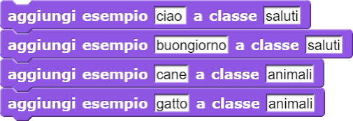
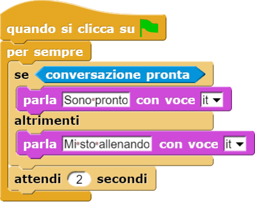
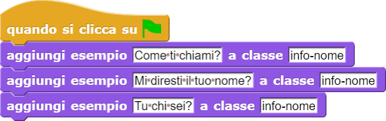
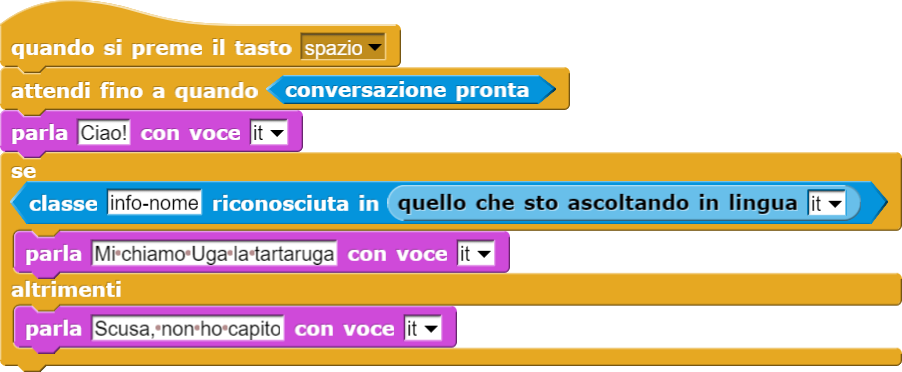

Effettua la sintesi vocale di una parola o frase (primo parametro) utilizzando la voce indicata nel secondo parametro.
Simple SNAP! conversation and AI-related blocks
Fare doppio clic sul file scaricato per aprirlo e lasciarlo in esecuzione in background.
ATTENZIONE: Windows oppure il proprio antivirus potrebbero segnalare un rischio nell'aprire questo file. In tal
caso bisogna dire ad un eventuale pop-up di eseguire comunque il programma.
NB: Se non state utilizzando Chrome Web Browser alcune funzioni potrebbero avere dei problemi.
Effettua la sintesi vocale di una parola o frase (primo parametro) utilizzando la voce indicata nel secondo parametro.

Registra la voce e la analizza sulla base della lingua specificata nel parametro (ad esempio: "it" per italiano,
"fr" per francese, "en" per inglese, "es" per spagnolo, e così via). Infine, il blocchetto restituisce una parola
o frase di testo scritto corrispondente a ciò che Watson è riuscito a riconoscere nei suoni registrati.
In questo esempio, il programma incita a dire qualcosa, registra la voce e salva le parole comprese in una variabile
precedentemente creata. Infine parla dicendo l'unione della frase "Ho capito..." e delle parole capite.

Restituisce la traduzione della parola o frase scritta come primo parametro. Nel secondo parametro deve essere specificata
la lingua di origine e nel terzo parametro la lingua di destinazione ("it", "fr, "es" e così via).

In questo esempio, il programma aspetta che gli venga detto qualcosa, poi quello che ha capito in seguito al riconoscimento
vocale viene tradotto dall'italiano al francese. Infine effettua la sintesi vocale del risultato della traduzione,
parlando con una voce della medesima lingua.
NB: i blocchetti di istruzioni messi uno dentro l'altro vengono sempre eseguiti dal più interno al più esterno.
Per poter usare i blocchetti legati alla conversation, che si basa sul servizio IBM Watson Assistant, è necessario possedere
un account Watson e delle credenziali per la risorsa Assistant. Per farlo, segui
questo tutorial.
Copiare e incollare le proprie credenziali, costituite da apikey e URL, nei blocchi di SNAP come illustrato qui
sopra. Le variabili apikey e URL sono già presenti in ogni nuovo progetto.

Ricordarsi poi di cliccare sulla bandierina verde per impostare il valore delle suddette variabili.

Le "classi" della conversation sono insiemi di parole o frasi che si riferiscono ad una medesima intenzione comunicativa
(ad esempio "ciao", "buongiorno" e "buonasera" sono tutti modi per salutare). Con questo blocco è possibile aggiungere
un esempio di parola o frase ad una classe.
Una volta aggiunto un esempio ad una classe, il servizio Watson Assistant ha bisogno di un po' di tempo per "allenarsi".
Questo blocco ci dice se la conversazione è pronta o meno ad essere utilizzata restituendoci VERO o FALSO.

In questo esempio all'interno di un ciclo infinito "per sempre" viene ripetuto un controllo per cui se la conversazione
risulta pronta il computer mi dice che è pronto, altrimenti mi dice che si sta allenando. Attende 2 secondi prima
di controllare nuovamente. Il blocco "conversazione pronta" rappresenta quindi la "condizione" da mettere all'interno
del blocco "se... allora... altrimenti...".
Questo blocco ci dice VERO o FALSO a seconda che la parola o frase scritta nel secondo parametro (es. "buongiorno")
venga riconosciuta dal Watson Assistant all'interno dell'insieme di parole o frasi (ovvero la "classe" precedentemente
definita, nel nostro esempio "saluti") indicato nel primo parametro.


In questo esempio viene inizialmente allenato il computer a riconoscere una classe chiamata "info-nome" con una
serie di frasi di esempio che rappresentano modi in cui è possibile chiedere il nome ad un interlocutore.
Successivamente, premendo la barra spaziatrice sulla tastiera, il programma resta in attesa che la conversazione
sia pronta. Solo in quel caso il programma procederà ad eseguire le istruzioni successive e dirà "Ciao!".
A quel punto rimarrà in ascolto per il riconoscimento vocale (il blocco "quello che sto ascoltando"). Se riconosce
le parole capite come una frase appartenente alla classe "info-nome" allora risponde vocalmente dicendo il proprio
nome, altrimenti comunica di non aver capito.
Permette di azzerare tutte le classi e gli esempi creati.
ATTENZIONE: tutto il lavoro di addestramento del Watson Assistant precedentemente fatto verrà annullato.
Thanks to eCraft2Learn for their amazing work!